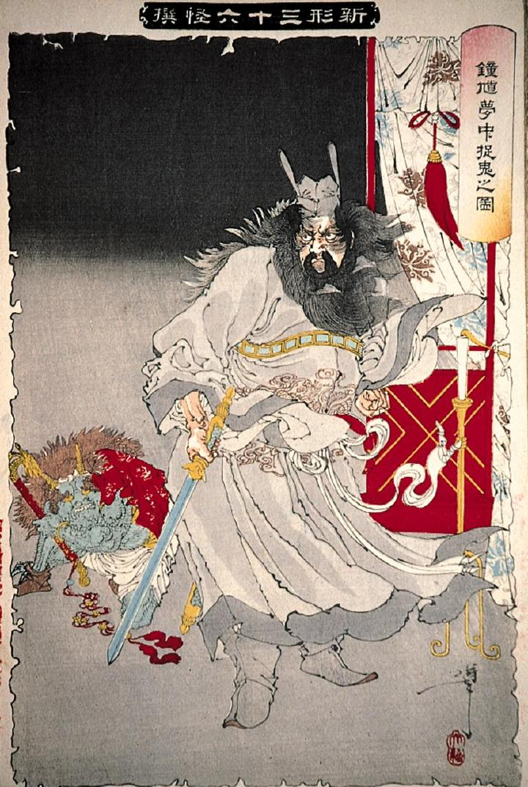

鍾馗の武威におびえる青鬼。地面にうずくまっている。赤い上衣と白いキマタをつけ、手には龍の飾りがついた棒状の道具を持っている。
著作者：月岡芳年／出典：親書誌：A80_prague_0012：鍾馗夢中捉鬼之図；ショウキムチュウソッキノズ／日付：2011／資源識別子：A80_prague_0012_0001_0000
Copyright (c)2010- International Research Center for Japanese Studies, Kyoto, Japan. All rights reserved.